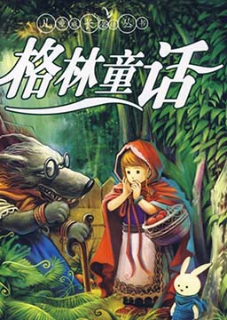
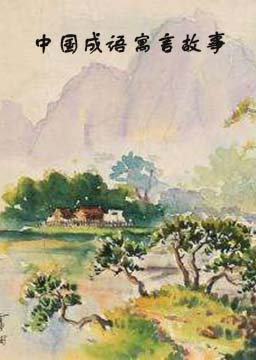
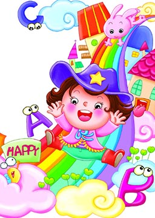
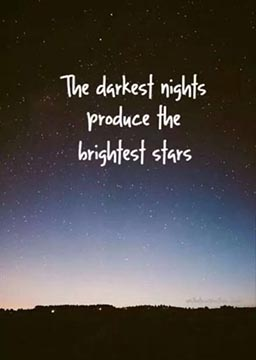
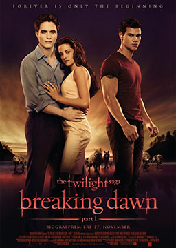
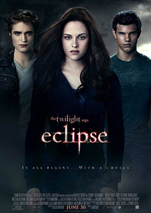
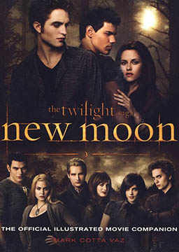
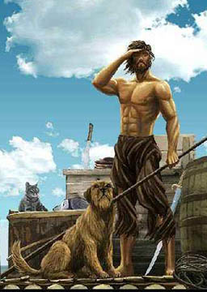
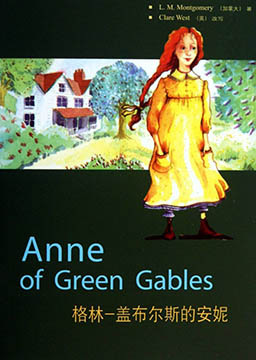

双语小说
收录中英文双语小说300多部，包括世界经典名著、社会小说、悬疑小说等短篇和长篇小说，可按照初中难度、高中难度和大学难度分类阅读，每部小说都有分段中英文对照，点击单词可查看中文翻译。

格林童话 (Grimm's Fairy Tales)
作者：雅可布·格林， 威廉·格林 (Jacob Grimm, Wilhelm Grimm) [德国]
德国语言学家雅可布·格林和威廉·格林兄弟收集、整理、加工完成的德国民间文学，大部分源自民间的口头传说。它是世界童话的经典之作，自问世以来，在世界各地影响十分广泛。格林兄弟以其丰富的想象、优美的语言给孩子们讲述了一个个神奇而又浪漫的童话故事。故事用通俗、质朴、流畅的语言，对神奇童话世界里湛蓝的天空、茂密的森林、英俊的王子、美丽的公主等进行了描写，颂扬了诚实、善良、勤劳、勇敢，批评了懒惰、自私、虚伪、狡猾，体现了德国人民丰富的想象力，优美的内心世界和崇高的道德境界。
中国成语寓言故事 (Chinese Idioms and Fables)
作者：未知 (unknow) [未知]
在中华民族五千年的传统文化中，成语故事是汉语中的璀璨明珠，是中华民族语言的瑰宝。其精练、形象，极富表现力，有着悠久历史文化、民族文化的丰厚积淀。我们可以通过这些历史成语故事去了解中华民族高超的智慧和历久弥新的语言文字。
英语小故事 (English stories)
作者：未知 (unknow) [未知]
阅读英语小故事等趣味英语可以激发对英语学习的兴趣，是提高英语能力的好方法。短小精悍，简单易懂，是英语入门阅读的好材料。充分利用工作和生活的碎片时间提升英语阅读能力。
英语美文精选 (Selected English Essays)
作者：未知 (unknow) [未知]
忘记白天的浮躁和喧嚣，静心阅读，感受世间苦乐悲喜，提升人生高度。以浅显的语言表达着人间真情；以至深的情感述说着五彩人生；在每一个角落把真情的火炬点燃；让每一缕清香在尘世间流传；让真情在心灵的碰撞中凝固成永恒。
暮光之城4: 破晓 (The Twilight Saga: Breaking Dawn)
作者：斯蒂芬妮·梅尔 (Stephanie Meyer) [美国]
贝拉与爱德华历经磨难终于踏进了婚姻殿堂。婚后爱德华和贝拉去艾思蜜岛上渡蜜月，度过了一段快乐的时光。不久贝拉发现怀孕，蜜月提前结束。狼族担心胎儿会对族人构成威胁决定除掉它。雅各布为保护贝拉离开狼族，连夜警告库伦家。胎儿生长迅速令贝拉吃尽苦头。爱德华不忍看她受苦希望她放弃孩子，但贝拉却坚持要生下。分娩当晚，贝拉大量失血，在她命悬一线之际，爱德华将装有自己吸血毒液的针管插进贝拉心脏。另一边王族也注意到了这个新生儿，一场撼动吸血鬼、狼人和人类世界的对决正悄悄来袭。
暮光之城3: 月食 (The Twilight Saga: Eclipse)
作者：斯蒂芬妮·梅尔 (Stephanie Meyer) [美国]
即将中学毕业的贝拉陷入两难的境地：她要在爱德华和雅各布中选择一个恋人，而这个选择极有可能引发卡伦家族和狼人族群之间的一场血腥战争。热血沸腾的贝拉宁愿选择死亡以便与爱德华长相厮守。另一方面，雅各布的介入让他们两人的感情差点亮起红灯。当贝拉和爱德华共度在家时，爱德华发现有吸血鬼从贝拉的房间偷了东西。谁也不知道他们的目的是要循着上面的气味寻找贝拉所在的地点。贝拉将过去种种意外联系起来，终于明白来自传说中克兰家族的维多利亚正是操控一切的幕后主脑。为了替死去的詹姆斯复仇，维多利亚正纠集一伙帮凶匆匆赶往福克斯，对爱德华和贝拉的生命造成了莫大的威胁，卡伦家族决定联合狼人族群去应对共同的敌人。冰与火的矛盾不可调和，在爱与牺牲的天平上，贝拉发现她所要奉献的不只是灵魂。
暮光之城2: 新月 (The Twilight Saga: New Moon)
作者：斯蒂芬妮·梅尔 (Stephanie Meyer) [美国]
贝拉即将度过自己的18岁生日，可她一点也不想过，因为这样她就比爱德华大一岁了，生日派对上贝拉在撕礼物时不小心划破了手指，这让刚刚才开始“素食”的贾斯帕闻到了血腥味，差点杀了贝拉，幸亏其他人的制止。爱德华经过这件事后觉得自己总给贝拉带来厄运，认为唯有自己离开才能带给贝拉安全，就欺骗贝拉说他已经不爱她了，然后就全家消失了，贝拉非常痛苦，在狼人雅各布的帮助下，渐渐好转。爱德华以为贝拉死了，就到意大利的强大的沃尔图家族去寻死。爱丽丝发现贝拉没有死，就告诉了贝拉一切的误会和真相，贝拉踏上了去救爱德华的旅程。
暮光之城1: 暮色 (The Twilight Saga: Twilight)
作者：斯蒂芬妮·梅尔 (Stephanie Meyer) [美国]
美国作家斯蒂芬妮·梅尔写的系列小说。作品获得纽约时报主编精选、出版者周刊 “年度最佳好书”、亚马逊网站 “最近十年来最佳好书”、美国图书馆协会“十大青少年优良读物”及“十大最佳丛书”等荣誉。内容简介：贝拉是一个与众不同的女孩，她不爱慕虚荣，不会像其他女孩一样追求时髦，也不愿伪装自己刻意去和合不来的同学搞好关系。因为母亲再婚的缘故，贝拉搬去和父亲同住。在新学校里，贝拉遇到了一个名叫爱德华的男孩，他跟贝拉遇见过的所有人都不一样，不仅英俊、聪明、幽默，而且跟贝拉非常有共同点--同样孤独。两人很快就陷入了爱河。然而爱德华的真实身份其实是一个吸血鬼，爱德华和贝拉能有情人终成眷属吗？
鲁滨逊漂流记（简化版） (Robinson Crusoe)
作者：丹尼尔·笛福 (Daniel Defoe) [英国]
鲁滨逊出生于一个中产阶级家庭，一生志在遨游四海。一次在去非洲航海的途中遇到风暴，只身漂流到一个无人的荒岛上，开始了段与世隔绝的生活。他凭着强韧的意志与不懈的努力，在荒岛上顽强地生存下来，经过28年2个月零19天后得以返回故乡。
格林·盖布尔斯的安妮（简化版） (Anne of Green Gables)
作者：露西·莫德·蒙哥马利 (Lucy Maud Montgomery) [加拿大]
安妮·雪利住进卡斯伯特家以后，埃文利村的生活变得不再死气沉沉。他们本想收养一个男孩来帮忙料理格林·盖布尔斯的农活，可他们却得到了安妮，一个长有红发、雀斑且叽叽喳喳有说不完的话的女孩。她是个富于爱心的孩子。但她的麻烦却总是不断！先是林德太太的来访，然后是给教区牧师妻子的蛋糕，还有她的红头发……经过在学校的争吵，她还会理睬吉尔伯特·布莱思吗？